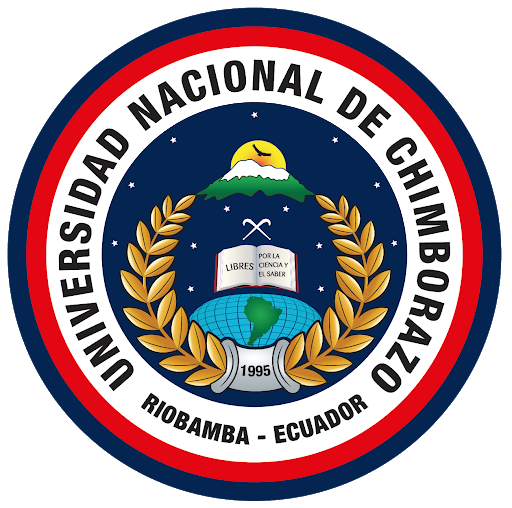
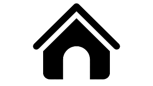

| Inicio | Mayo del 2012 |
|---|---|
| Nombre de la institución | Unidad Educativa "Calos María de la Condamine" |
| Docente tutor | Lic. Carlos Silva |
| Finalización | Enero del 2018 |
| Fecha de grado | Marzo de 2018 |
| Especialidad | Bachiller en Ciencias |
| Nota de grado | 7,63 |
Universidad

| Nombre de la institución | Universidad Nacional de Chimborazo |
|---|---|
| Facultad | Facultada de ciencias de la educación: Humanas y Tecnologías |
| Carrera | Pedagogía de las ciencias experimentales: Informática |
| Inicio | Mayo del 2018 |
| Semestre | Sexto |
